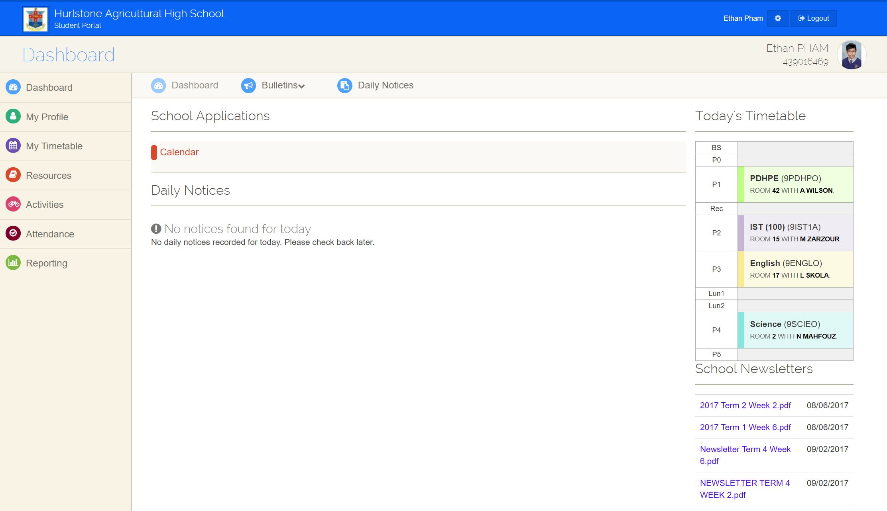

The World Wide Web defined simply, is a global collection of documents and other resources identified by links. In other words, it is a collection of webpages found on the internet. Hyperlinks, or simply links, are references to other webpages or websites by clicking on it. Links come in two forms, hypertext links and hypermedia links. Hypertext is text that contains links to other text documents whereas hypermedia is an extension of hypertext and can link to other forms of media such as images, movies, audio as well as text.
This is a hyperlinkWeb servers are essentially powerful computers that store all of the website's files being the website's HTML documents, images, CSS stylesheets and javascript files. It is possible to host your own website's files on your personal computer but it is preferred to host your website's files on a dedicated web servers because they are always active, connected to the internet and always retain the same IP address.
Web browsers are applications used to access the World Wide Web. Web browsers are applications that connects to a website's server and displays the website's webpages. Web browsers work by retrieving information from the web server that the user requests and displays the content of the webpage on the user's device. Popular web browsers include Google Chrome, Safari and Microsoft Edge.
The internet is a global interconnected system of computers and other devices that communicate to each other through internet protocols. The internet is often confused with the World Wide Web although they are different. The World Wide Web is a collection of documents whereas the Internet is the global interconnected system of computers and devices. To access the World Wide Web, users must use the internet. Another notable difference is that the World Wide Web is interconnected through hyperlinks and URLs whereas the internet helps users access those hyperlinks and URLs on websites
The internet can be explained with an analogy. Imagine that the internet is a city. You want to navigate it and visit to your friend's house which is the desired website to want to visit. Imagine that the suburb that your friend lives in is the web server and the roads that lead to your friend's house are URLs and hyperlinks.
An intranet is a private network that can only be accessed by authorised users. Intranets are generally designed for internal communications within an organisation. Intranets are usually used to help employees in an organisation by helping them communicate, collaborate and perform their roles as well as allowing them to access important information, links, forms, databases, etc.
An intranet can be seen as a private web as it is usually used as collection of documents for users to access. Similarly to a website on the World Wide Web, a secure and reliable intranet requires a web server to host all of the intranet's files. Some intranets are only limited to a local area network (LAN) or can be accessed over a wide area network (WAN). Intranets over wide area networks typically require users to eneter login credentials.
An example of an intranet is Sentral. Sentral is a third-party company that develops cloud-based management platforms for schools to use to help their students access school resources such as assignment schedules and timetables. Sentral also displays important daily notices for students to read and access information on. Sentral also requires users to enter login credentials to access the platform as the platform is designed to be used anywhere.
The Internet Protocol is a set of rules or a protocol for data packets that ensure that they can travel across networks and arrive at the correct desired destination. Data packets are a unit of data that travel along the given network path. Data that traverses the internet is divided into these units. When data is sent across the internet, each data packet that the data is divided into is attached to IP information that helps routers send the information to the correct address. Every device or domain that connects to the internet is given an IP address. The IP information connected to the data packets helps them identify the desired IP address.
TCP/IP stands for Transmission Control Protocol/Internet Protocol. These protocols relate to data transfer between two computers or between the client and the server. IP helps identify devices and helps data be transferred to the correct destination. TCP determines the route that the data has to take to get to the desired destination.
HTTP also known as Hypertext Transfer Protocol is the undoubtedly the most popular internet protocol. HTTP is the foundation of data communication on the World Wide Web. HTTP is a protocol for carrying hypermedia documents such as webpages and HTML files as well as other media meaning that it is responsible for transmitting all data present on the World Wide Web. HTTP functions on a request-response protocol on the client-server model with the client opening a connection to the server and waiting until it receives a response. HTTP also relies on TCP/IP to tranfer its files.
FTP or File Transfer Protocol is a protocol that involves sending or fetching files. FTP is a method of sending files between the client and the server. FTP functions using two connection paths with one path for communication and the other path for sending or fetching files. For example, when a user wants to download a file from a website, the web browser sends a request to the server to download the files and the server responds by sending the files to the computer.